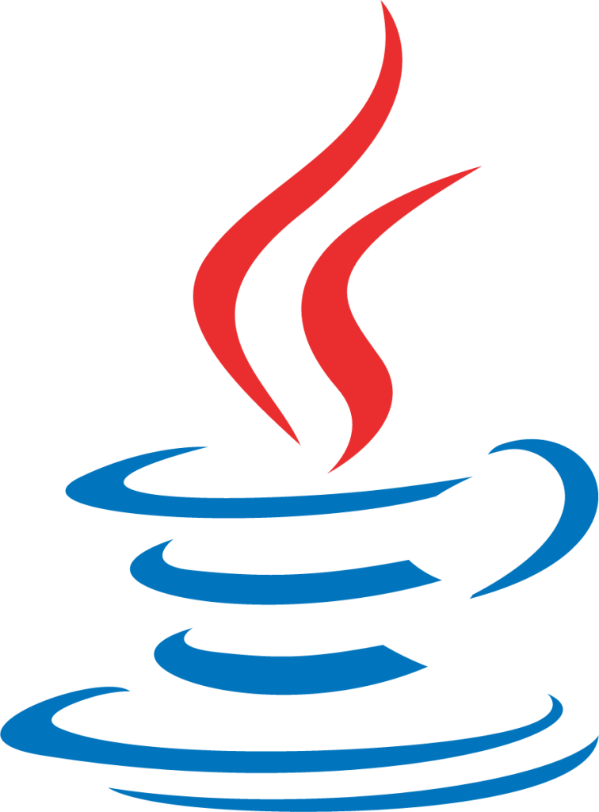
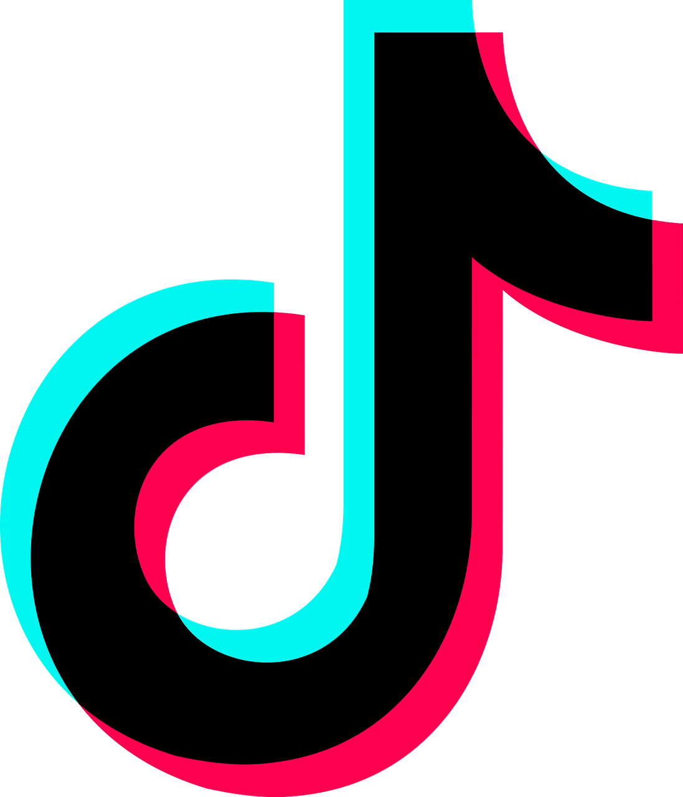

Thomas De Sousa
Thomas De Sousa
Développeur Full-Stack & Passionné d'Infrastructure
Full-Stack Developer & Infrastructure Enthusiast
Je construis des outils concrets et je gère ma propre infrastructure, le tout self-hosted.


Je construis des outils concrets et je gère ma propre infrastructure, le tout self-hosted.
Étudiant en école d’ingénieur et développeur autodidacte, je construis des outils concrets — du scraping d’offres d’emploi à la transcription vocale locale. Je gère aussi ma propre infrastructure : déploiement, monitoring, automatisation, le tout self-hosted.

Python

Java

C

JavaScript

HTML5

CSS3

Flask

Selenium

Git

Docker

n8n

Notion
BFWhisper

JobScraper

ESIEE Salles

ClipGenius

Vinted Bot

ChessBot
NoteGenius
Brawl Bot
n8n Plaud
TikTok IA
FastPregen
SaaS Factory
Observer
Zeffut SMP
NeuraNote
JournalisteIA
 Mon GitHub
Mon GitHub
 Figma & inspired by Ibrahim Memon
Figma & inspired by Ibrahim Memon